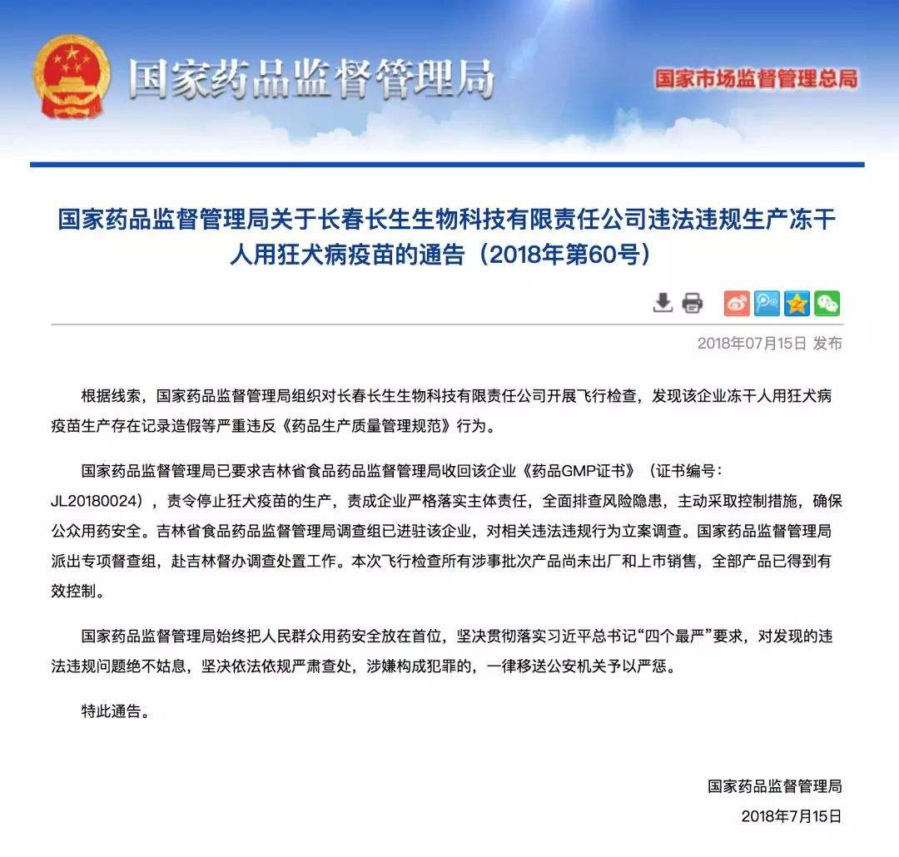
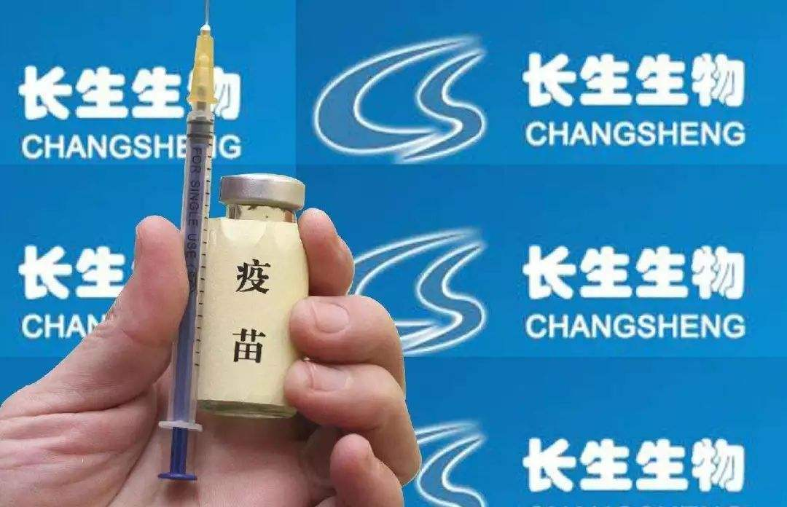

时纪整理
2018年7月5日 国家药品监督管理局会同吉林省药监局对长春长生进行飞行检查。
2018年7月11日 一名内部员工向国家药监局实名举报长春长生疫苗生产存在造假。
2018年7月15日 国家药品监督管理局通告“长春长生生物科技有限责任公司违法违规生产冻干人用狂犬病疫苗”，长春长生生物科技有限责任公司（长春长生）生产的狂犬病疫苗被发现存在编造生产记录和产品检验记录，随意变更工艺参数和设备。已被责令停产，并收回GMP证书（生产质量管理规范证书）
2018年7月16日 长春长生发布公告，表示正对有效期内所有批次的冻干人用狂犬病疫苗全部实施召回。
2018年07月17日 长春长生发布声明称：“此次飞行检查所有涉事疫苗尚未出厂销售，全部产品已得到有效控制。”
2018年7月20日 长春长生生物科技有限责任公司收到《吉林省食品药品监督管理局行政处罚决定书》 ：1. 没收库存的“吸附无细胞百白破联合疫苗”（批号：201605014-01）186支；2. 没收违法所得85.9万元；3. 处违法生产药品货值金额三倍罚款2584047.60元；罚没款总计3442887.60元
2018年7月21日 一篇名为《疫苗之王》的文章迅速在微信朋友圈引爆，关注度超百万，将疫苗安全的问题推至风口浪尖。
2018年7月22日 李克强总理就疫苗时间作出批示：此次疫苗事件突破人的道德底线，必须给全国人民一个明明白白的交代。
2018年7月23日 下午15点，长春新区公安分局依据吉林省食品药品监督管理局《涉嫌犯罪案件移送书》，对长春长生生物科技有限责热公司生产冻干人用狂犬病疫苗涉嫌违法案件迅速立案调查，将主要涉案人员公司董事长高某芳（女）和4名公司高管带至公安机关依法审查。
2018年7月23日 晚19点，习近平主席对吉林长春长生生物疫苗案件作出重要指示。证监会、公安机关先后介入。长春市人民检察院按照吉林省人民检察院要求，依法成立专案组对“长生疫苗”事件开展调查。国务院调查组赴吉林开展长春长生疫苗案件调查处理工作。
2018年7月25日 世卫组织发布媒体声明，称完全支持国家药监局的行动，并随时准备向中国国家卫生主管部门提供支持。
国家药监局发布《疫苗监管问答》，对长春长生飞行检查发现哪些问题、目前问题疫苗流向和控制情况等进行了回应。
2018年7月26日 吉林省食品药品监督管理局原党委组书记、局长崔洪海（正厅级）涉嫌受贿罪一案，由长春市人民检察院向长春市中级人民法院提起公诉。
2017年11月3日 原国家食药监总局发布《百白破疫苗效价指标不合格产品处置情况介绍》，称在药品抽样检验中检出长春长生生物科技有限公司生产的批号为201605014-01的百白破疫苗效价指标不符合标准规定。
2017年11月 国家食药监总局要求停用长生生物批次为20160514-01的百日破疫苗。
在“疫苗事件”中，舆情整体态势呈上升趋势。7月15日，国家药监局通报长春长生狂犬疫苗记录造假，责成吉林省食品药品监督管理局收回长春长生相关证书，但是该事件并没有引起大范围舆论关注。7月22日，李克强总理就疫苗事件作出批示：此次疫苗事件突破人的道德底线，必须给全国人民一个明明白白的交代，引发舆论关注与热议。随后，“人民日报”、“央视新闻”等官方媒体报道及转载相关部门对该事件的回应，引发舆论持续关注，相关舆情量在当日达到最高峰，之后相关舆情数量呈下降趋势。
32%的媒体报道聚焦多部门联合调查问题疫苗，“央广网”“人民网”、《中国青年报》等多家央媒报道国家药监局以及山东、吉林两省纪委监委、人民检察院依法介入调查。长春公安局立案调查涉事企业对董事长高某芳等15名涉案人员采取刑事拘留强制措施。证监会对深交所上市公司长春长生立案调查。地方媒体多以转发官方消息、央媒报道的形式对案件进展进行了报道。
24%的媒体报道国家领导人对问题疫苗作出指示，《人民日报》发文称，国家主席习近平对吉林长春长生生物疫苗案件作出重要指示指出，长春长生生物科技有限责任公司违法违规生产疫苗行为，性质恶劣，令人触目惊心。有关地方和部门要高度重视，立即调查事实真相，一查到底，严肃问责，依法从严处理。国务院总理李克强作出批示要求，国务院立刻派出调查组，对所有疫苗生产、销售等全流程全链条进行彻查，尽快查清事实真相，不论涉及到哪些企业、哪些人都坚决严惩不贷、绝不姑息。“央广网”发文称，吉林省委召开常委会议传达学习习近平总书记对长春长生生物科技有限责任公司违法违规生产疫苗作出重要指示，表示将以最坚决的态度和有力的举措，全力做好案件查处工作，一查到底，坚决问责，全力保障群众切身利益和社会安全稳定大局。

15%的媒体报道关注各地回应问题疫苗流向，“观察者网”发文称此前上海、河南、海南、重庆、山东、山西、广西、河北8个省市疾控中心明确表示，全面停用或是暂停使用长春长生狂犬病疫苗。湖南、福建、广东3省疾控中心表示该省境内没有涉事批次狂犬疫苗。截止目前（7月25日），已有30个省、自治区和直辖市就问题疫苗事件发声。“中国新闻网”报道，内蒙古未采购过长春长生生物科技有限公司生产的批号为201605014-01、武汉生物制品研究所有限责任公司生产的批号为201607050-2的百白破疫苗。
13%媒体报道解读问题疫苗带来的影响，“每日经济新闻”发文称，长生生物疫苗案件就像是一根导火索，在市场情绪影响下，近日生物疫苗股接连下跌。《钱江晚报》发表评论员文章，文章指出，药的改革，安全是前提，药品安全一旦失守，所有改革的“成效”都将归于零。这次问题疫苗事件的发生严重影响的是人们的安全感，从这个意义上说，医疗体制改革还须进一步打破固化利益和思想藩篱，继续向前推进。
12%的媒体报道呼吁民众以科学态度看待疫苗，《番禺日报》发文呼吁广大市民应以科学的态度看待疫苗，按时带孩子进行免疫接种。“澎湃新闻”引述专家观点指出，如果因为负性事件拒绝打疫苗，那也是不对的。从古至今，传染病让太多的人失去了生命。如何防治传染病，接种疫苗就是最经济、有效的可以保护易感人群的措施。
此外其他新闻报道占比4%，主要是分析医疗领域腐败问题、盘点涉事企业违规记录、解读国外疫苗监管措施等。

34%的网民言论呼吁严惩涉及企业及负责人，网络大V@刘强东、@张杰、@刘璇等在社交媒体上发文，要求有关部门严查涉事企业，严惩企业负责人，网络大V的言论得到了草根网民的大量跟评与转发。
20%的网民言论担忧问题疫苗带来健康隐患，部分网民翻查接种记录本，发现自己的孩子已接种问题疫苗，担忧会有副作用带来潜在的健康风险。尽管已有权威医学专家作出了解释，依然有网民对继续按时接种疫苗、补打疫苗以及国产疫苗质量表达了顾虑情绪。
17%的网民言论认为疫苗监管存在漏洞，网民分析认为大量问题疫苗流入市场，注入儿童身体，暴露了疫苗流通过程中监管出现了问题。也有网民指出如果这次疫苗事件，矛头不指向监管层，只指向国产，难以破除只有调查没有结果的恶性循坏。
12%的网民言论追踪问题疫苗的具体流向，其中@网站分析公会发表了代表性博文，文章以官方数据为基础，对问题疫苗流向进行了大数据分析，获得网民的大量转发。也有博文认为除了长生生物之外，武汉生物生产的疫苗流向也值得关注。
10%的网民言论质疑涉事企业作出的回应，部分网民认为长生生物的回应避重就轻，缺乏基本的诚意，不值得公众的再次信任。也有网民指出长生生物回应没有给出合理的解决方案，不接受道歉，应该让长生生物倒闭退市。
此外7%的网民言论涉及了其他观点，主要包括微信公众号“张凯律师”借疫苗事件写文获利、涉事企业官方网站遭遇黑客攻击、医学专家普及疫苗知识以及质疑媒体转移舆论焦点等。
Copyright © 时纪 All rights reserved.